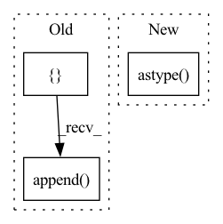

Pattern ID :15354
Before Change
conv_bn_pairs, bn_conv_pairs = fold_all_batch_norms_to_weight(model.model)
bn_dict = {}
convs = []
for conv_bn in conv_bn_pairs:
bn_dict[conv_bn[0].name] = conv_bn[1]
convs.append( conv_bn[0])
bias1 = copy.deepcopy(numpy_helper.to_array(ParamUtils.get_param(model.model, convs[1], BIAS_INDEX)))
cls = CrossLayerScaling(model)
cls_set_info = cls.scale_model()After Change
model_onnx, model_torch = models_for_tests.get_single_residual_model_and_torch_model()
input_shape = (1, 3, 32, 32)
test_data = np.random.randn(*input_shape).astype( np.float32)
equalize_torch(model_torch, input_shape)
cle_out = model_torch(torch.as_tensor(test_data))
// Equalize ONNXIn pattern: SUPERPATTERN
Frequency: 3
Non-data size: 3
Instances Fragment ID: 52074830
Project Name: quic/aimet
Commit Name: 561eb0f70f1b9a8b5f8efbe82ff66c5da5dbe4cb
Time: 2023-04-26
Author: 63610745+quic-mangal@users.noreply.github.com
File Name: TrainingExtensions/onnx/test/python/test_cross_layer_equalization.py
M Class Name: TestHighBiasFold
N Class Name: TestHighBiasFold
M Method Name: test_find_high_bias_fold(1)
N Method Name: test_find_high_bias_fold(1)
M Parent Class:
N Parent Class:
M File Name: TrainingExtensions/onnx/test/python/test_cross_layer_equalization.py
N File Name: TrainingExtensions/onnx/test/python/test_cross_layer_equalization.py
M Start Line: 183
M End Line: 199
N Start Line: 194
N End Line: 220
Before Change
image_batch = torch.from_numpy(image_batch).to(self.device)
facesBatch, probabilitiesBatch = self.face_detector(image_batch, return_prob=True)
for faces, probabilities in zip(facesBatch, probabilitiesBatch):
batched = []
if faces is not None:
for face, probability in zip(faces, probabilities):
batched.append( dict(
offset=0,
weight=probability,
blob=face.detach().numpy(),
))
results.append(batched)
return resultsAfter Change
results = []
batch = np.asarray(batch)
with torch.no_grad():
image = torch.from_numpy(data.astype( "float32") ).to(self.device)
// Create a batch of size 1
image = image.unsqueeze(0)
Fragment ID: 52074831
Project Name: jina-ai/jina-hub
Commit Name: 22993c7537903c526271697f746cc4d08c38fcce
Time: 2021-05-20
Author: 67507873+shakurshams@users.noreply.github.com
File Name: segmenters/image/FaceNetSegmenter/__init__.py
M Class Name: FaceNetSegmenter
N Class Name: FaceNetSegmenter
M Method Name: segment(2)
N Method Name: segment(2)
M Parent Class: BaseSegmenter,TorchDevice
N Parent Class: BaseSegmenter,TorchDevice
M File Name: segmenters/image/FaceNetSegmenter/__init__.py
N File Name: segmenters/image/FaceNetSegmenter/__init__.py
M Start Line: 78
M End Line: 96
N Start Line: 80
N End Line: 110
Before Change
tree_indices = np.array([i for i in range(0, 2 * self.num_trees, 2)]).astype("int64")
self.tree_indices = torch.nn.Parameter(torch.from_numpy(tree_indices), requires_grad=False)
self.nodes = []
self.biases = []
for i in range(1, max_depth):
nodes = torch.nn.Parameter(
torch.from_numpy(weight_0[:, list(sorted(node_by_levels[i]))].flatten().astype("int64")), requires_grad=False
)
biases = torch.nn.Parameter(
torch.from_numpy(-1 * bias_0[:, list(sorted(node_by_levels[i]))].flatten().astype("float32")),
requires_grad=False,
)
self.nodes.append( nodes)
self.biases.append(biases)
self.nodes = torch.nn.ParameterList(self.nodes)
self.biases = torch.nn.ParameterList(self.biases)After Change
requires_grad=False,
)
missing_nodes = torch.nn.Parameter(
torch.from_numpy(missings[:, list(sorted(node_by_levels[i]))].flatten().astype( "int64") ),
requires_grad=False,
)
Fragment ID: 52074828
Project Name: microsoft/hummingbird
Commit Name: 108c2a6755f5b932d8b17842f9a438913379d847
Time: 2021-01-12
Author: supun.nakandala@gmail.com
File Name: hummingbird/ml/operator_converters/_tree_implementations.py
M Class Name: PerfectTreeTraversalTreeImpl
N Class Name: PerfectTreeTraversalTreeImpl
M Method Name: __init__(9)
N Method Name: __init__(8)
M Parent Class: AbstractPyTorchTreeImpl
N Parent Class: AbstractPyTorchTreeImpl
M File Name: hummingbird/ml/operator_converters/_tree_implementations.py
N File Name: hummingbird/ml/operator_converters/_tree_implementations.py
M Start Line: 318
M End Line: 336
N Start Line: 314
N End Line: 380